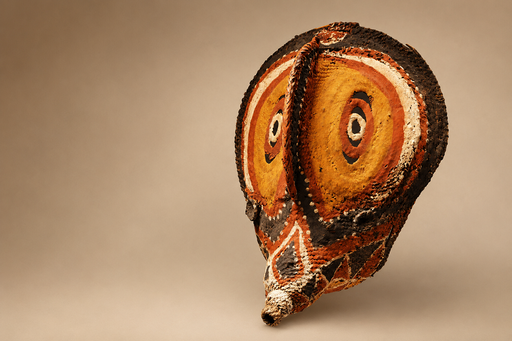

Inicio > Blog Bitácora de un bibliotecario > La forma de la memoria (01)
La forma de la memoria (01)
El ñame que desaparece
Documentos efímeros y los límites del libro
Este post forma parte de una serie que explora las múltiples formas en que las sociedades humanas han almacenado, transmitido y transformado la memoria a lo largo del tiempo, más allá de las historias restringidas centradas en los libros y la escritura. La serie aborda los archivos, los documentos y los sistemas de memoria como tecnologías históricamente situadas, moldeadas por relaciones de poder, condiciones materiales, ecologías y cosmovisiones culturales, y examina formas de transmisión frecuentemente excluidas de las narrativas dominantes sobre alfabetización y preservación: tradiciones orales, patrones tejidos, estructuras musicales, performances rituales, paisajes, cuerpos y otras infraestructuras vivas de la memoria.. Todas las entradas de esta serie pueden consultarse en el índice de esta sección.
Más allá de la inscripción perdurable
Las historias del libro suelen escribirse como historias de contenedores de información cada vez más estables. Tablillas de arcilla, rollos de papiro, códices, volúmenes impresos, soportes magnéticos y sistemas de almacenamiento digital se consideran variaciones sucesivas del mismo principio subyacente: la preservación de la información mediante la persistencia material. El documento sobrevive físicamente y, gracias a esa supervivencia, la memoria se vuelve transmisible a través del tiempo.
Esta premisa está tan arraigada en el pensamiento archivístico y bibliográfico moderno que los sistemas que operan según lógicas temporales diferentes suelen quedar excluidos por completo de la categoría de documentación. Sin embargo, algunas sociedades han estabilizado y transmitido históricamente información socialmente significativa mediante procesos cíclicos, performativos, corporales e intencionalmente perecederos.
Un caso particularmente revelador surge entre el pueblo Abelam, habitante de las selvas tropicales de las montañas Prince Alexander, en la provincia de Sepik Oriental de Papúa Nueva Guinea. Entre ellos, los ñames ceremoniales participan en sistemas de prestigio, memoria social, continuidad ritual y reconocimiento histórico. La cuestión no es que "un ñame es un libro". Tales analogías reducen ambos fenómenos a una mera metáfora. La pregunta más pertinente se refiere a las condiciones bajo las cuales la información se vuelve socialmente perdurable incluso cuando su soporte material no lo es.
Ñames gigantes y visibilidad ceremonial
Para los Abelam, el cultivo del ñame constituye una parte importante de su vida. Pero el cultivo de ejemplares gigantes, que pueden llegar a medir entre 2 y 2,3 metros, va más allá de la actividad agrícola. Esos ñames de mayor tamaño se producen dentro de sistemas ceremoniales altamente estructurados que incluyen prácticas hortícolas especializadas, restricciones rituales, exhibiciones competitivas, relaciones de intercambio y elaboradas formas de decoración. Durante las exhibiciones ceremoniales, los ñames pueden transformarse mediante complejas máscaras de cestería baba, pigmentos, conchas, plumas y ornamentación vegetal que los convierten en objetos ceremoniales visibles públicamente. Su apariencia refleja no solo habilidad técnica, sino también prestigio, conocimiento heredado, competencia ritual y relaciones con fuerzas espirituales asociadas con la fertilidad y la tierra.
Estudios antropológicos realizados por investigadores como el antropólogo británico Anthony Forge han demostrado que estos sistemas ceremoniales no pueden reducirse únicamente a la producción de subsistencia. Los ñames gigantes participan en estructuras más amplias de reconocimiento social a través de las cuales la continuidad, la jerarquía y la memoria se manifiestan públicamente.
Lo importante aquí es que estos procesos transmiten información socialmente significativa sin depender de una inscripción permanente. El ñame no funciona como una superficie textual sobre la cual se fijan y preservan signos. Su significado emerge, en cambio, a través de la activación ceremonial, la visibilidad pública, la comparación con ciclos anteriores, la interpretación colectiva y la memoria social. Las historias de cultivo exitoso, las relaciones de prestigio, la competencia ritual y la continuidad intergeneracional no se almacenan en un objeto perdurable, sino que se mantienen mediante eventos performativos recurrentes.
Sistemas documentales sin permanencia
Desde la perspectiva de la teoría documental convencional, esto crea un problema significativo. El sistema ceremonial opera claramente como un mecanismo para preservar y transmitir conocimiento socialmente relevante, pero su soporte material es radicalmente inestable. El ñame se descompone. Las decoraciones se deterioran. La exhibición ceremonial desaparece. No queda nada equivalente a un manuscrito permanente o un registro de archivo. Sin embargo, la continuidad social asociada con estos eventos persiste a través de las generaciones.
Esta persistencia no depende de la supervivencia indefinida de un objeto fijo, sino de la repetición. El conocimiento se mantiene mediante la recreación estacional, la experiencia práctica, la transmisión oral, el trabajo ritual y el reconocimiento público. El "registro" sobrevive porque el evento se repite, no porque el objeto perdure.
La lógica temporal subyacente a estos sistemas difiere profundamente de la del códice o el archivo. Los documentos escritos preservan la información resistiendo la desaparición. El sistema ceremonial del ñame de los Abelam preserva la continuidad mediante la regeneración cíclica, a pesar de la desaparición. La decadencia no es ajena al proceso de preservación, sino una de sus condiciones constitutivas.
La historia del libro más allá del libro
La importancia de este caso trasciende la mera curiosidad etnográfica. Las tradiciones documentales modernas han privilegiado históricamente la durabilidad, la textualidad, la fijeza, la portabilidad y la separación entre almacenamiento y representación. Los sistemas que dependen de la memoria, la activación ritual, la transmisión corporal o la recurrencia estacional a menudo se han relegado a los ámbitos de la "cultura" o el "simbolismo", en lugar de ser reconocidos como mecanismos para organizar y transmitir conocimiento socialmente autorizado.
El caso de los Abelam sugiere una posibilidad diferente. Algunos sistemas documentales podrían no estar diseñados en absoluto en torno a la permanencia. Su continuidad depende precisamente de la reactivación continua. En tales condiciones, la desaparición no representa el fracaso documental. Se convierte en parte del mecanismo mediante el cual se produce la preservación.
Desde esta perspectiva, la historia del libro se convierte en una rama de una historia mucho más amplia: la historia de las técnicas materiales y sociales mediante las cuales las sociedades humanas externalizan, estabilizan, reactivan y legitiman la memoria.
Bibliografía
- Buckland, Michael K. (1997). What Is a 'Document'? Journal of the American Society for Information Science, 48 (9), pp. 804-809.
- Briet, Suzanne (2006). What Is Documentation? Lanham, MD: Scarecrow Press.
- Day, Ronald E. (2001). The Modern Invention of Information: Discourse, History, and Power. Carbondale: Southern Illinois University Press.
- Forge, Anthony (1990). Art and Environment in the Sepik. Bathurst: Crawford House Press.
- Forge, Anthony (1973). The Abelam Artist. In Forge, A. (ed.) Primitive Art and Society. London: Oxford University Press, pp. 169-192.
- Scaglion, Richard (1979). The Codification of an Abelam Yam Cult. Ethnology, 18 (1), pp. 19-33.
- Scaglion, Richard (1999). My Men Are My Heroes: The Cult of the Long Yam in a New Guinea Society. Prospect Heights, IL: Waveland Press.